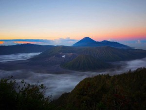

Bromo, Karena keindahannya yang luar biasa itu, menimbulkan daya tarik bagi para pelancong. Berasal dari Indonesia dan banyak pula para wisatawan mancanegara. Namun melakukan perjalanan wisata khususnya tipe objek alam harus menggunakan paket wisata malang bromo. Persoalannya untuk lebih memudahkan dalam penyusuran rute yang berliku dan selalu terjamin keamanan dan kenyamanannya.
Tapi di sisi lain, faktor biaya merupakan yang kadang terasa memberatkan bagi calon pelancong. Untuk itulah disediakan beberapa paket wisata Bromo dengan pilihan yang masing-masing menarik untuk dipilih. Disediakan beberapa paket pilihan travel wisata Bromo yang bisa kita ambil untuk secara khusus menikmati sunrise alias matahari terbit. Bromo dengan pemandanganya yang sangat indah dan mengesankan karena momen itulah pertama kali kita menyaksikan sang surya terbit dari lintasan timur puncak Bromo.Semua pilihan biayanya dijamin tidak akan memberatkan. Karena sudah seharusnya paket ditawarkan supaya wisatawan tidak kebingungan menyusuri rute perjalanan dan sekaligus menghemat biayanya
Destinasi Paket Wisata Bromo Midnight Murah
Paket Wisata Bromo 1 Hari atau paket wisata bromo full day tour atau umum disebut dengan traveling one day tour bromo ini tidak butuh menginap di hotel atau penginapan di sekitar Gunung Bromo. Karena untuk Paket Wisata Bromo Midnight hanya membutuhkan waktu sekitar 12 jam saja. Dengan meeting point atau penjemputan bisa dari hotel, rumah, Airport dari Surabaya, Malang, Kota Batu, Sidoarjo dan kota lainnya di Jawa Timur. Yang di perkirakan setelah penjemputan dari lokasi Anda tiba di transit point untuk bergantu dengan shutlle jeep sekitar jam 3 pagi.
Jadwal Paket Wisata Bromo Midnight
| Peserta | Harga |
|---|---|
| 2 Orang | Rp.1.050.000/Orang |
| 3 Orang | Rp.700.000/Orang |
| 4 Orang | Rp.550.000/Orang |
| 5 Orang | Rp.480.000/Orang |
| 6 Orang | Rp.430.000/Orang |